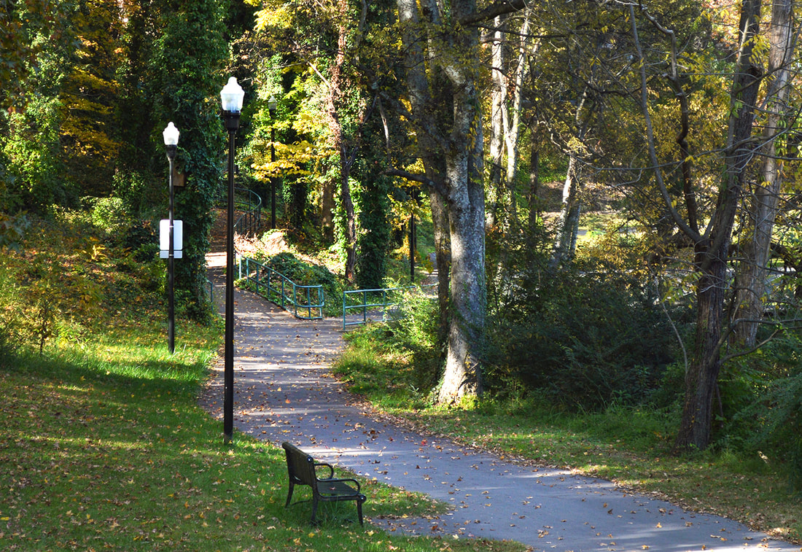
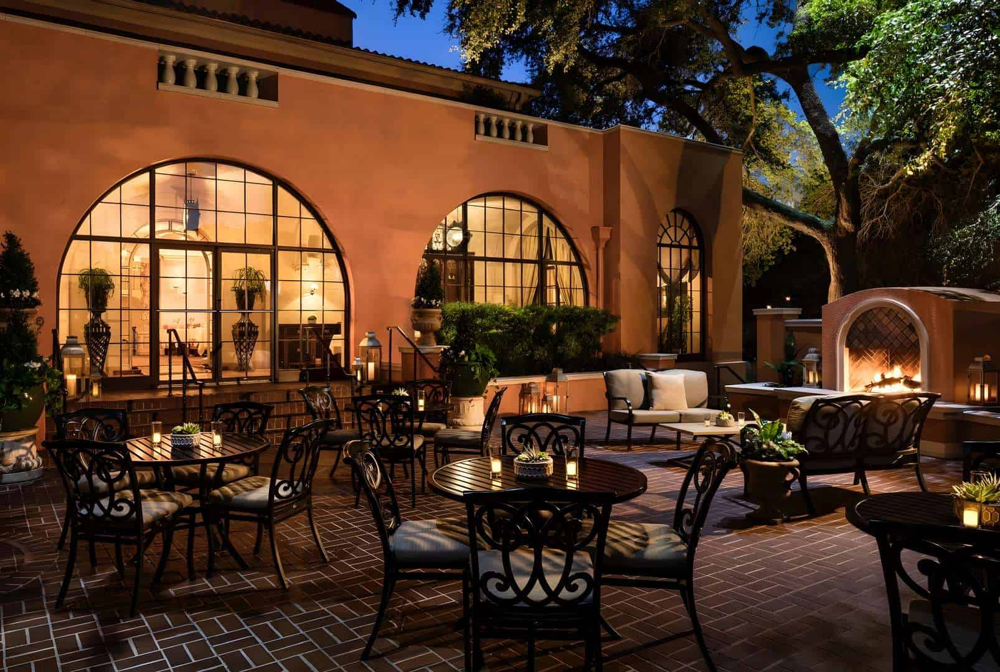

Parks
Alpharetta has an exceptional park system that truly enhances the quality of life in the city. Enjoy acres devoted to walking trails, playgrounds, sports fields, arboretums, and community parks. At the expansive Wills Park, along with excellent sports and recreational facilities, you'll find one of the finest equestrian facilities in the Southeast.
Alpharetta Recreation and Parks Department offers a wide variety of classes, programs and activities for the entire family throughout the year. Volunteer Coaching Opportunities are now available for qualified adults through the Alpharetta Recreation and Parks Department's youth sports programs.

The Big Creek Greenway is a multi-use trail, primarily a
12-foot wide concrete path that meanders through the
deciduous woods along Big Creek.
The greenway offers an ideal setting for walking,
jogging, inline roller blading, and biking along creek;
birds and mammals, flora and fauna, can be seen from the
trail. Dirt mountain bike trails are located on the east
side of the creek 2/5 mile south of Webb Bridge Road. In
2016 the City of Alpharetta partnered with Zagster, Inc
to provide free bike share for Big Creek Greenway users.
Bikes can be rented for up to 3 hrs free of charge.
Stations are now located at 4 stops along the Big Creek
Greenway
Food
Alpharetta, Georgia offers visitors an eclectic mix of awesome cuisine and family-friendly affordability that makes for the perfect dining experience! From Southern comfort favorites to trendy culinary choices, the more than 200 restaurants in Alpharetta are sure to satisfy every appetite. In addition to comfortable national and local chains, there are a host of chef-driven and family-owned restaurants in Alpharetta. that you don't want to miss.
The right ambiance can take a dining experience from good to great, and now is the perfect time of year to elevate those mealtime vibes by taking it outside. Alpharetta is home to dozens of restaurants boasting sun-dappled porches and cozy patios. Whether it's a rooftop bar serving ice-cold craft brews or a sweet outdoor spot to rosé all day with your besties, you'll find plenty of awesome options to get your al fresco on in Alpharetta.